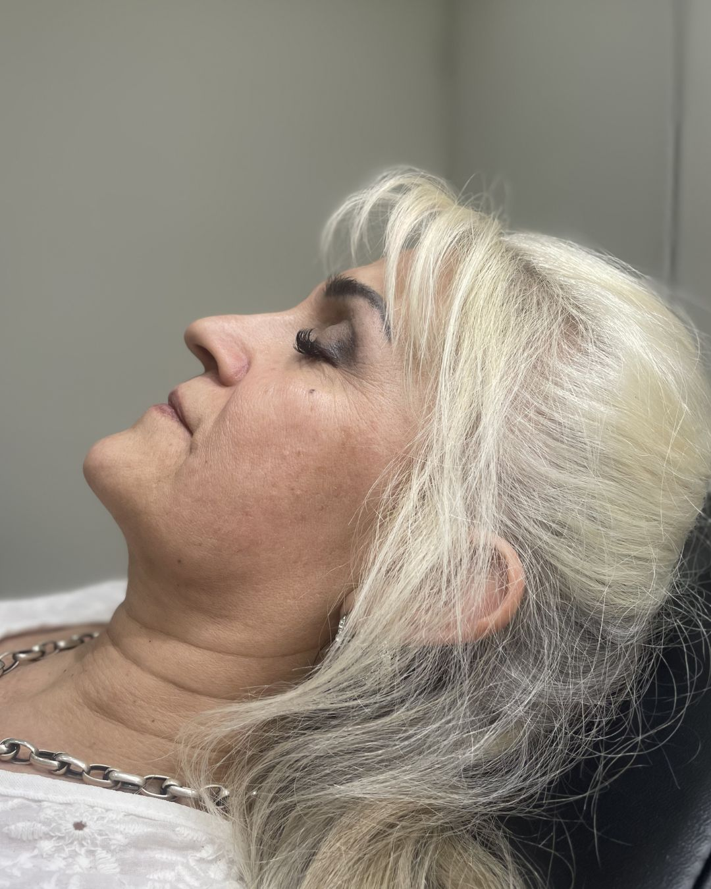
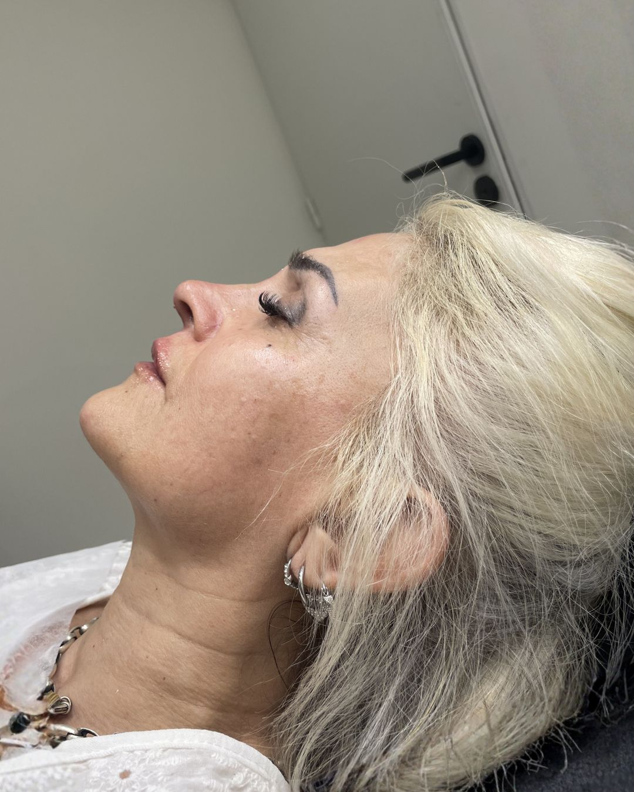
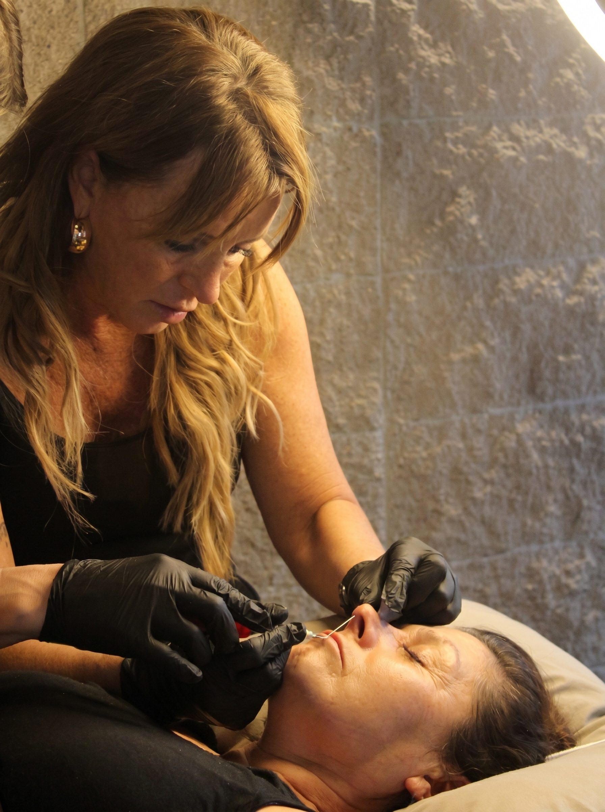

La ciencia de la armonía.
El arte de tu belleza natural.
Medicina estética facial de autor. Ginecóloga con 25 años de experiencia médica, especializada en procedimientos mínimamente invasivos con criterio clínico y productos premium.
¿Y si este fuera tu antes y después?
Deslizá la imagen para comparar el antes y el después de nuestras pacientes.
Cada procedimiento es una obra personalizada. Los resultados hablan por sí solos: naturales, armónicos y completamente reales.
Reservar Turno

ANTES DESPUÉS← Deslizá para comparar →
Cada procedimiento es una obra personalizada. Los resultados hablan por sí solos: naturales, armónicos y completamente reales.
Reservar Turno
Criterio médico real.
Resultados naturales.
La Dra. María Carolina Soler es ginecóloga con 25 años de trayectoria médica, especializada en medicina estética facial. Su formación clínica de base es lo que fundamenta y diferencia su práctica: no es un centro de estética ni una clínica de bajo costo, es atención personalizada con criterio médico real.
Su tratamiento estrella es la rinomodelación con ácido hialurónico, un procedimiento que requiere precisión técnica y formación anatómica que solo una médica con su experiencia puede garantizar.
Cada plan de tratamiento es una "obra de autor", personalizada exclusivamente para la estructura ósea y cutánea de cada paciente. El resultado buscado no es exagerado ni artificial: es armónico con tu rostro.
Procedimientos Profesionales
Rinomodelación
★ ESTRELLAArmonización del perfil nasal con ácido hialurónico. Sin cirugía, resultado inmediato.
Toxina Botulínica
Suaviza arrugas de expresión. Frente, entrecejo y patas de gallo. Duración 4–6 meses.
Relleno Labial
Volumen, definición y contorno natural. Respeta la anatomía propia de cada paciente.
Bioestimuladores
Estimulan colágeno y elastina. Mejoran flacidez, textura y luminosidad de forma natural.
Perfiloplastía Facial
Armonización global del perfil combinando procedimientos. Plan personalizado para cada caso.
PDRN · Mesoterapia Coreana
Regeneración celular profunda. Firmeza, textura y luminosidad con micropápulas inyectables.
La voz de nuestras pacientes.
"Buscaba algo muy natural para mis labios y la Dra. superó mis expectativas. Nadie nota que me hice algo, pero todos me dicen que me veo más descansada."
"Excelente profesional. Me explicó cada paso de la bioestimulación y los resultados a los 3 meses son increíbles. Mi piel se siente completamente renovada."
"El consultorio es un oasis. La atención de la Dra. Carolina es impecable, muy dedicada y detallista. La rinomodelación quedó perfecta. Absolutamente recomendable."

Criterio, ética y sensibilidad estética.
Criterio Médico Real
25 años de formación y práctica clínica respaldan cada decisión estética. No seguimos tendencias: evaluamos cada caso con rigor médico.
Productos Premium
Utilizamos exclusivamente insumos de laboratorios líderes a nivel mundial, garantizando resultados duraderos y de calidad comprobada.
Acompañamiento Completo
Desde la primera consulta hasta el retoque de los 15 días post-procedimiento: una experiencia de atención cercana, cálida y profesional.
Todo lo que necesitás saber.
Reservá tu turno.
El primer paso es una consulta sin compromiso. Escribinos por WhatsApp y coordinamos la evaluación personalizada para tu caso.
Mendoza, Argentina
Dirección completa al confirmar turno
Lunes a Viernes
14:00 a 20:00 hs
WhatsApp Business
Canal principal de consulta y reservas
¿Cómo es el proceso?
Escribís por WhatsApp y consultás sobre el tratamiento que te interesa.
Reservás tu turno con una seña y coordinamos fecha y horario.
En la consulta evaluamos tu caso y diseñamos juntas el plan de tratamiento.
Realizamos el procedimiento y a los 15 días coordinamos el retoque incluido.
Formas de pago
Abonando con tarjeta bancarizada podés hacerlo en hasta 3 cuotas sin interés al precio de lista. Si pagás en efectivo o por transferencia, aplicamos un descuento especial.
Comenzá tu viaje de belleza.
Reservá una consulta de evaluación y diseñemos juntas un protocolo personalizado para tu rostro.